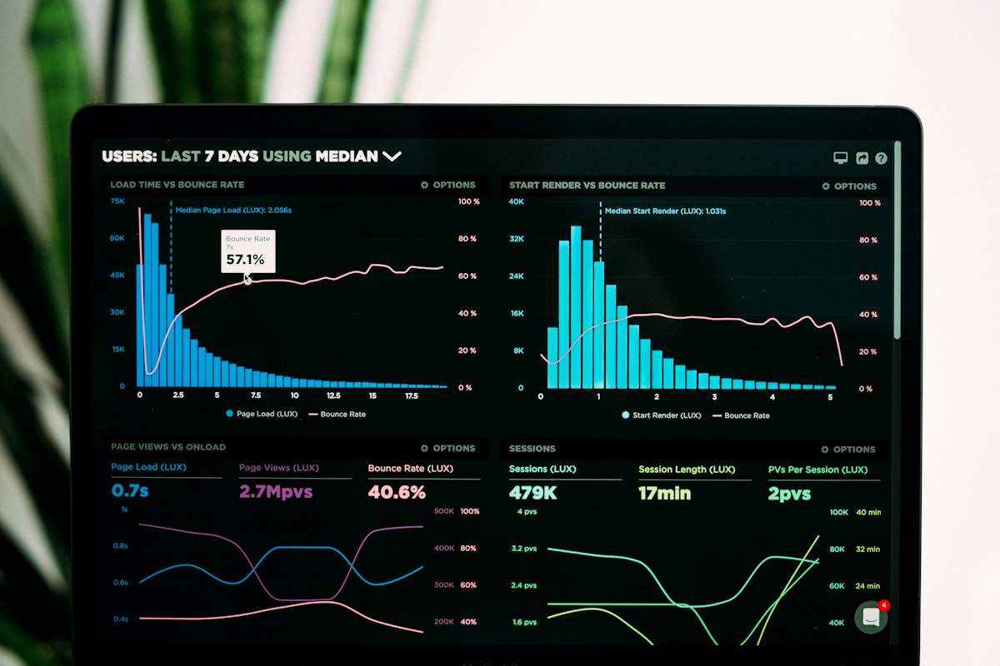

Languages
Go, Java, Python, SQL, C++, TypeScript, JavaScript
Available for software engineering roles
Software engineer focused on distributed systems, cloud infrastructure, and high-performance backend applications.
$ akshat --profile
role = software_engineer
focus = distributed_systems
location = raleigh_nc
status = building

I’m a Master of Computer Science student at North Carolina State University and a Research Software Engineer working on large-scale scientific computing. I enjoy turning difficult infrastructure and backend problems into reliable, observable systems.
My experience spans distributed consensus, Kubernetes, event-driven architectures, observability, and applied AI. I care about measurable impact and systems that remain understandable as they grow.
Go, Java, Python, SQL, C++, TypeScript, JavaScript
Spring Boot, Django, Flask, Kafka, PostgreSQL, MySQL, MongoDB, Redis, Celery
Kubernetes, Docker, Terraform, AWS, Azure, Linux, Ansible, SLURM, GitHub Actions
RAG pipelines, Claude API, LangChain, Prometheus, Grafana, Splunk, OpenTelemetry
Selected roles across research, cloud infrastructure, and software engineering.
North Carolina State University
Pearson
Keynote India
Plus91
Developed a Go-based IaaS control plane managing infrastructure resource state on a Terraform-provisioned 5-node Kubernetes cluster.
 Event-driven data
Event-driven dataImplemented a Kafka-backed Java document store with decoupled write ingestion, partitioned streams, and offset-based replay for crash recovery.

CI/CD analyticsBuilt webhook ingestion from 10+ GitHub repositories into a React/TypeScript pipeline status and deployment dashboard, replacing polling with event-driven updates.
Built a distributed payment ledger with Raft-based consensus, idempotent transactions, durable persistence, and automated failover across a 5-node cluster.
Developed real-time warehouse perception for detecting and tracking risky worker-vehicle interactions from monocular video with predictive risk analysis.
Created a terminal observability platform combining ML-based command risk assessment with role-based privilege enforcement and audit trails.
Built a secure healthcare data pipeline transforming HL7 messages into FHIR patient records with role-based access and audit logging.
Master of Computer Science · 4.0 GPA
Design & Analysis of Algorithms · Software Engineering · Database Systems · Distributed SystemsBachelor of Technology, Computer Science · 3.9 GPA
Operating Systems · Computer Networks · Machine Learning · Cloud Computing · Artificial IntelligenceLet’s build something